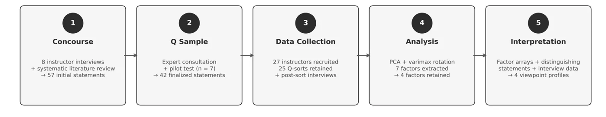

Learning Research · AI in Higher Education
What Makes AI-Assisted Writing "Authentic"? A Q-Methodology Study
A rigorous qualitative-quantitative study identifying four distinct orientations among university instructors toward writing authenticity in the age of generative AI — with direct implications for assessment design, institutional policy, and faculty development.
Context
Generative AI broke how we think about writing authenticity
When ChatGPT and similar tools became widely accessible, higher education suddenly faced a problem it had no established framework for: if a student uses AI in their writing, is that writing "authentic"? What does "authentic" even mean when AI can generate fluent, coherent, discipline-appropriate text on demand?
Prior research had examined AI detection tools, evaluation bias, and performance outcomes — but what remained almost entirely unexplored was how instructors themselves conceptualize authenticity. What are they actually evaluating when they judge whether student writing is "real"? And does that differ across disciplines, career stages, and epistemological orientations?
These questions matter enormously for learning experience design. Rubric design, assessment policy, faculty development workshops, and institutional AI guidelines all depend on a coherent understanding of what authenticity means — and who defines it. This study was designed to surface that structure empirically.

Five-stage Q-methodology research procedure: concourse development → Q sample selection → Q-sort data collection → factor analysis → factor interpretation.
Research Questions
What perspectives exist, and what shapes them?
The study investigated two primary questions:
RQ1
What perspectives on the authenticity of student-AI collaborative writing emerge when employing Q methodology, and how can these perspectives be characterized?
RQ2
How do higher education instructors perceive the authenticity of student-AI collaboratively generated texts, and in what ways do their disciplinary and professional backgrounds inform these perceptions?
Method
Q-methodology: surfacing subjective viewpoint structures
Q-methodology is a hybrid qualitative-quantitative approach that identifies shared subjective viewpoints through participant sorting of predefined statements. It is well-suited for contested constructs where the goal is to map the diversity and structure of perspectives — not test hypotheses about populations.
Concourse development
Conducted semi-structured interviews with 8 university instructors in China. Transcripts were thematically coded to identify recurring themes around writing authenticity in AI-assisted contexts. Combined with a systematic literature review and analysis of institutional AI policies, generating 57 initial statements.
Q sample selection
Expert review (5 researchers and professors) and pilot testing (7 instructors) refined the initial pool to 42 statements — within the recommended 40–60 range. Statements were developed and administered in Chinese, with English translations independently verified by a bilingual researcher.
Data collection
27 university instructors completed the Q-sort task and background questionnaire via QTIP (University of Wisconsin–Madison). Participants sorted all 42 statements onto a forced quasi-normal grid from −5 (most disagree) to +5 (most agree), taking approximately 25–40 minutes. 25 Q-sorts were retained for factor analysis. A 15–20 minute post-sort interview elicited reasoning behind extreme placements.
Factor analysis
Sorting results were analyzed using PQMethod 2.35. Principal component analysis extracted the initial factor structure, followed by varimax rotation. Seven factors had eigenvalues >1.0, accounting for 72% of total variance. Four factors were retained for interpretation based on defining sorts, conceptual coherence, and distinguishing statements.
Factor interpretation
Each retained factor was interpreted through its highest (+3 to +5) and lowest (−3 to −5) ranked statements, distinguishing statements (significant Z-score differences across factors), and post-sort interview data — producing rich, theoretically grounded accounts of each orientation.
Findings
Four distinct orientations toward writing authenticity
Factor analysis retained four factors, defined by 12 of the 25 Q-sorts. Each represents a qualitatively different way of conceptualizing what makes student writing authentic when AI is involved. Critically, all four orientations rejected the absolutist view that any AI use necessarily compromises authenticity — but they diverged sharply on what authenticity actually requires.
Factor 1 · Metacognitive Authenticity
Authenticity is conditional and tied to students' evaluative judgment. What matters is not how much AI is used, but whether students exercise critical judgment in selecting, questioning, and taking responsibility for AI-supported content. Disciplinarily diverse — STEM, humanities, arts, and business instructors converged here.
Factor 2 · Cognitive Authenticity
Authenticity resides in the writing process: sustained cognitive engagement, reflective sense-making, and meaning-making. AI can scaffold structure or expression, but the core ideas must emerge from the student's thinking. Academic integrity and authenticity are treated as inseparable — strongly defined by instructors in education and writing pedagogy.
Factor 5 · Affective Authenticity
Authenticity is grounded in emotional sincerity and personal voice. AI-generated wording — even when ideas originate from the student — cannot substitute for the writer's own linguistic presence. Authenticity is affective and expressive, not merely cognitive — and is distinct from academic integrity as a construct.
Factor 7 · Normative Authenticity
Authenticity is anchored in institutional standards and human expressiveness. Emotional expression and cultural identity are not just personal qualities but principled criteria for evaluation. This orientation most strongly resists treating AI-verified content as authentically authored, and calls for new institutional-level evaluation standards.

Cross-factor divergence on key statements — illustrating how the four orientations diverge sharply on issues like data source reliability, the authenticity–integrity relationship, and the role of emotion and identity.
Key Theoretical Contribution
Individual authenticity bifurcates under AI mediation
Existing theoretical frameworks treat individual authenticity as a single category — something internal to the self. This study demonstrates empirically that under AI mediation, the individual dimension splits into two distinct and separable facets: a cognitive dimension (Factor 2, grounded in process and meaning-making) and an affective dimension (Factor 5, grounded in emotional sincerity and voice).
This matters practically: an instructor who grounds authenticity in cognitive engagement may judge a piece of AI-assisted student work very differently than one who grounds it in affective expression — even though both claim to be evaluating "authenticity." This bifurcation is invisible to survey-based research and requires Q methodology's priority-structure approach to surface.
LXD Implications
What these findings mean for learning design and assessment
Assessment rubric design
Rubrics for AI-assisted writing tasks should be explicit about which dimension of authenticity they prioritize — source evaluation and critical reasoning (Factor 1), personal voice (Factor 5), or institutional compliance (Factor 7) capture fundamentally different qualities. Unstated criteria create student confusion and instructor inconsistency.
Faculty development program design
More productive than AI detection-tool training would be workshops that invite instructors to rank-order the study's Q-sort statements and discuss their reasoning — making implicit orientations visible and creating structured dialogue about divergent assumptions. The 42 statements from this study can function as a faculty development instrument.
Institutional AI policy
Institutional policies should avoid rigid, universalist definitions of writing authenticity. The four-factor structure demonstrates that authenticity is legitimately multidimensional — and that any policy framework flexible enough to acknowledge metacognitive, cognitive, affective, and normative dimensions will be more implementable than one that imposes a single criterion.
Student-facing guidance design
Students receiving contradictory signals about what makes AI-assisted writing acceptable need explicit, assignment-level guidance specifying how AI use will be evaluated and which dimension of authenticity the assignment prioritizes. This is a content design problem, not just a policy problem.
Status
Manuscript under peer review
This study is currently under review at a peer-reviewed journal. The manuscript has been developed through multiple drafts, including practitioner notes, full theoretical framing, and supplementary materials (Q-sort statements, factor loadings, participant demographics, and distinguishing statement tables).
The study was conducted in mainland China with 25 instructors across 13 provinces, spanning humanities, social sciences, STEM, and professional programs. Teaching experience ranged from 1 to 46 years (M = 14.9, SD = 11.6). 56% of participants had overseas academic experience.